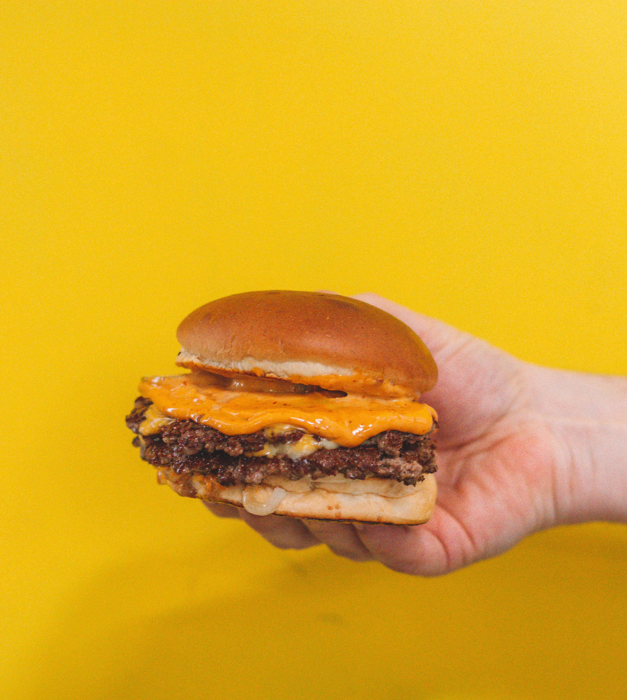

Smash Burgers
Discover the ultimate Smash Burger recipe - an explosion of juicy
goodness with irresistibly crispy edges. For optimal results, opt
for meat no leaner than 80/20 and ensure it's thoroughly chilled. To
prevent smoke in the kitchen, I recommend cooking these delectable
patties outdoors. The high heat ensures quick grilling, so have all
your essentials prepared and ready to go for a seamless cooking
experience! Get ready to indulge in burger bliss! 🍔🍔🍔

Details
- Prep Time: 15mins
- Cook Time: 5mins
- Total Time: 20mins
- Servings: 4
- Yield: 4 burgers
Ingredients
- 4 hamburger buns
- 2 tablespoons butter,
- 1 pound ground chuck beef (80% lean)
- 4 6in squares of parchment paper
- salt as needed
- pepper as needed
- 4 slices American cheese
- toppings of choice
Instructions
- Prepare your outdoor grill, preheating it to high heat, and
lightly oil the grate. Position a cast iron flat-top griddle or
a large cast iron skillet on the grill and heat until it starts
smoking.
- Take the buns and spread a layer of butter on their insides,
toasting them on the flat-top until they achieve a light golden
brown color. Once toasted, set them aside.
- Next, divide the meat into 8 loosely-packed balls, each weighing
about 2 ounces. Avoid pressing the meat too tightly, as this
could hinder proper smashing. Place each ball on the hot
flat-top and cover it with a piece of parchment paper (which you
can reuse for a second patty to prevent sticking to the
spatula). Immediately press down on each ball with two sturdy,
criss-crossed spatulas or the bottom of a small skillet,
smashing them to a 1/4 inch thickness. Sprinkle the meat with
salt for seasoning.
- Grill the patties for approximately 45 seconds, ensuring the
edges turn dark brown and the centers exhibit a light pink hue.
Gently lift the patties using a bench scraper or firm spatula,
flip them over, and promptly cover 4 of them with cheese. Grill
for an additional 15 to 20 seconds to melt the cheese. Stack the
plain patties over the cheese-covered ones, creating 4 stacks in
total.
- Finally, move each stack onto a bun and serve these delectable
delights with your favorite toppings. Get ready to relish the
scrumptious flavors of your homemade smash burgers! 🍔🔥🍔
Back to home